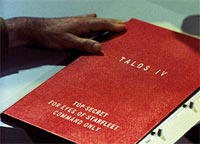
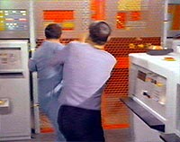
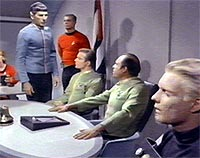
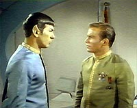

|
A
pena de morte em Jornada
 Um
aspecto de Jornada nas Estrelas que já foi muito visto,
mas pouco explorado em artigos é a influência do ramo do Direito
em diversos episódios. Um
aspecto de Jornada nas Estrelas que já foi muito visto,
mas pouco explorado em artigos é a influência do ramo do Direito
em diversos episódios.
Para citar exemplos, na Série Clássica já tivemos
julgamentos em “Court Martial”, “The Squire of
Gothos”, “Space Seed” e até no sexto filme, “A
Terra Desconhecida”. Na Nova Geração tivemos
julgamentos em “Encounter at Farpoint”, “Justice”,
“A Matter of Perspective” e “All Good Things”
e audiências em “The Measure of a Man” e “The
Drumhead”. Em Deep Space Nine tivemos audiências em “Dax”
e julgamentos em “Tribunal”. Em Voyager,
finalmente, tivemos audiências em “Death Wish”.
Como estamos no âmbito da Série Clássica analisaremos
neste texto o episódio “The Menagerie” (A Coleção),
que talvez seja o mais apropriado por mencionar a pena de morte,
de modo superficial, e o caráter preventivo de uma norma
sancionatória. Não são aspectos explorados diretamente pelo
episódio, mas estão lá.
Nesse episódio Spock seqüestra o capitão anterior da Enterprise,
Cristopher Pike, hoje debilitado e paralítico em conseqüência
de um acidente, com o intuito de levá-lo a Talos IV, onde os
habitantes tem o poder de concedê-lo a ilusão de plenitude
física.
 Nesse
episódio descobrimos que a penalidade imposta a quem se aproximar
de Talos IV é a morte. Parece-me um pouco deslocada do mundo
perfeito idealizado por Gene Roddenberry a noção de que a pena
capital ainda seja imposta no século 23, única e exclusivamente
no caso de descumprimento da proibição de não ir a um
determinado planeta.
Na lógica do episódio os habitantes de Talos IV, por serem
dotados de excepcionais poderes mentais, são considerados
perigosíssimos e, portanto, qualquer forma de contato com eles
deve ser coibido.
Mas será que não é forçada em demasia a imposição da pena
capital aos infratores?
 Para
o episódio funcionar perante a audiência não, pois um certo
suspense é necessário para prender a atenção e mostrar a
gravidade da situação. A audiência fica apreensiva, “será
que Spock será condenado à morte apenas por um gesto
humanitário, qual seja, buscar o bem estar de seu antigo capitão
e amigo?”. O Capitão Kirk, por ser o responsável pelas
condutas de sua tripulação, também fica sujeito à condenação
e aí a situação se complica ainda mais.
Mas vamos esquecer por um momento o fato de os roteiristas terem
inserido esse elemento apenas como intuito de provocar suspense e
vamos nos concentrar no fato de que a pena capital existe no
universo de Jornada nas Estrelas.
Qual seria natureza jurídica da pena capital imposta aos
infratores que tenham ido a Talos IV? Para responder a essa
questão vamos fazer uma breve menção às teorias da pena,
existentes no nosso mundo real.
Primeiramente temos a Teoria Absoluta, onde a pena é a
retribuição justa do mal injusto cometido pelo criminoso. Por
essa teoria o delinqüente é punido tão somente porque cometeu
um crime; não visa a recuperação social do criminoso.
Em segundo lugar temos a Teoria Relativa, onde o intuito da pena
é o seu caráter preventivo. Sabendo da existência de uma
penalidade, a sociedade e, principalmente, o eventual infrator
ficarão inibidos da prática do ato criminoso. O objetivo aqui é
atemorizar.
Em último lugar temos a Teoria Mista (ou Unitária), onde a pena
tem caráter retributivo e preventivo. Retributivo porque o
infrator receberá uma penalidade por ter cometido a ato
criminoso; preventivo porque a imposição da pena servirá para a
reeducação e recuperação do criminoso e ainda servir como
instrumento de intimidação geral. O Código Penal brasileiro
adotou essa teoria.
 Analisadas
essas teorias concluímos que a pena de morte prevista no
episódio em questão se reporta à Teoria Relativa. A pena tem a
função de atemorizar a tal ponto que ninguém se atreva a violar
a proibição. Mas mesmo assim há uma grande desproporção entre
o ato cometido e a pena imposta.
O legislador penal sempre deve cominar as penas de acordo com a
gravidade dos crimes, sempre tendo-se em vista o que a sociedade
considera ou não como grave, quais condutas são toleradas e
quais não o são.
No Brasil, embora poucos saibam, há previsão da pena de morte no
Código Penal Militar, no caso de traição em período de Guerra
Externa. A própria Constituição Federal ao proibir a pena de
morte no art. 5ª, XLVI, faz uma ressalva “salvo em caso de
guerra externa declarada...”. E, para quem está curioso para
saber como se aplicará a pena de morte, o Código de Processo
Penal Militar dispõe que será através de fuzilamento (!!!).
Parece ou não fora da nossa realidade? Não é preciso dizer que
essa pena de morte nunca foi aplicada e espero que jamais o seja.
O correto seria uma atenuação dessa pena para uma de prisão por
tempo prolongado, pois a pena de morte é incompatível com o
direcionamento da Sociedade e, por conseqüência, do Direito no
mundo moderno. O Estado não pode deter o poder sobre a vida e a
morte das pessoas; é por demais perigoso e pode ficar sujeito à
arbitrariedades.
É perfeitamente compreensível que muitos cidadãos preguem ser a
pena de morte uma das soluções para evitar a prática de crimes
mais graves, como o homicídio doloso qualificado (intencional e
grave), por exemplo. Ainda mais porque atualmente parece que a
imposição da pena de prisão não está sendo suficiente para
coibir a prática de crimes, pois impera a noção de impunidade
por parte dos criminosos. A pena de morte teria função
preventiva, tão somente. Mas o grande problema é que se um
condenado, nem que seja apenas um em um milhão, seja na verdade
inocente e venha a morrer em conseqüência da condenação, toda
a credibilidade do sistema cai por terra. Inocentes já foram
condenados no passado, hoje ainda o são e nada impede que no
futuro isso ocorra de novo. É um risco muito grande.
Citaremos aqui um exemplo real, que não trata da pena de morte,
mas demonstra como erros no processo podem ser fatais. Há alguns
anos um sujeito qualquer foi condenado à pena de reclusão em
regime fechado (presídio de segurança máxima) e estava
foragido. Ele tinha um nome muito comum na nossa sociedade e nos
autos do processo criminal não havia uma única foto dele como,
por exemplo, em uma cópia do R.G. que deveria estar anexa aos
autos e não estava. O Juiz expediu o mandado de prisão e as
autoridades policiais bateram na porta da pessoa errada, que tinha
o mesmo nome do condenado foragido. O inocente foi arrastado à
força para fora de sua casa e levado ao Carandiru sem ter
oportunidade de se defender. Seu advogado fez tudo o que podia o
mais rápido possível para conseguir soltá-lo, mas quando ficou
comprovado o engano já haviam se passado meses e o inocente já
havia contraído o vírus da Aids durante a permanência no
cárcere. O Estado foi condenado a pagar-lhe uma indenização.
Mas não há indenização alguma que repare esse erro.
Indiretamente o inocente foi condenado à morte.
Não entraremos no mérito de que a pena de morte pode ser uma
solução devido ao aumento do número de crimes, à lotação
excessiva nos presídios, à impunidade de muitos criminosos etc.
Pode até ser que a imposição da pena capital seja uma das
possíveis soluções contra o aumento da criminalidade, mas
acredito que o preço para sabermos a resposta pode custar caro no
final.
 No
final de “The Menagerie” a Frota Estelar abranda a
proibição e expede um permissivo relativo à visita ao planeta
pelo fato das circunstâncias serem extraordinárias naquele
momento (incrível como os roteiristas encontram soluções
rápidas quando percebem que o tempo de duração do episódio
está terminando). Kirk e Spock ficam livres da condenação e ao
capitão Pike é dada uma nova vida na forma de uma ilusão. Pena
que em nosso mundo nem sempre as histórias tenham um final feliz
como esse.
Para quem tiver interesse em conhecer melhor as ciências do
Direito Penal e do Direito Processual Penal brasileiros é
recomendada a leitura de algumas obras que além de serem bem
acessíveis estão entre as melhores e mais completas já
publicadas:
- Flávio Augusto Monteiro de
Barros: Direito Penal, Parte Geral, vol. 1, Editora Saraiva;
-Guilherme de Souza Nucci: Código Penal Comentado, Editora RT;
-Guilherme de Souza Nucci: Código de Processo Penal Comentado,
Editora RT;
-Julio Fabbrini Mirabete: Processo Penal, Editora Atlas.
Luiz
Felipe do Vale Tavares é fã de Jornada, DVDs e ficção
científica e escreve sobre Série Clássica para o Trek
Brasilis
|